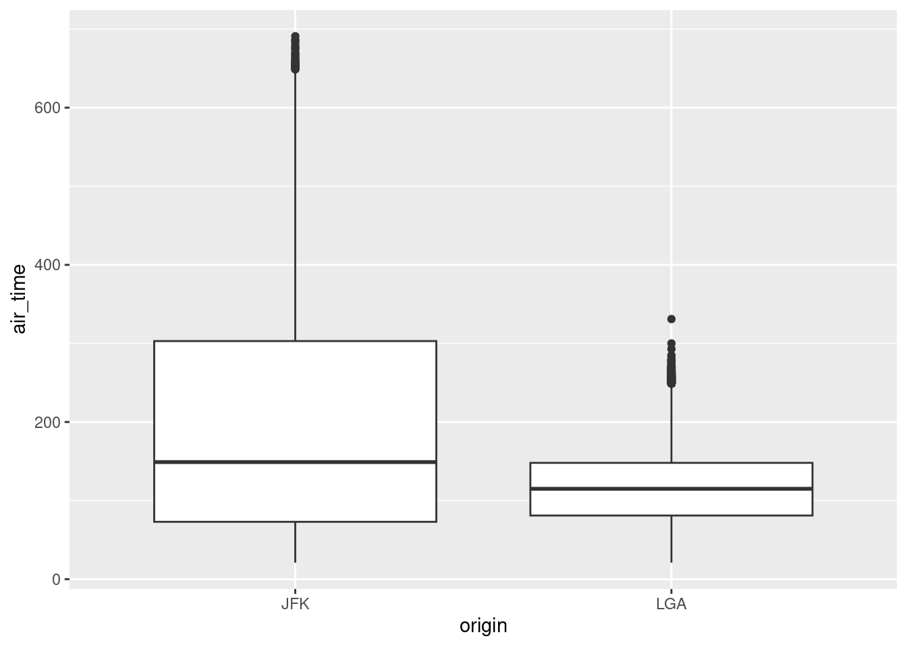

Associated Material
Zoom notes: Zoom Notes 03 - Selecting and Filtering Data
Reading:
If you are working through the suggested materials in order, you have
just completed Chapter 5 - Data
Transformation (https://r4ds.had.co.nz/transform.html) from
the online text R for Data Science. This material demonstrated
how to use the library dplyr, one of the libraries in
the tidyverse family. You will have learned how to use
the five core transformation functions – filter,
arrange, select, mutate and
summarise (with its helper function group_by).
These functions allow you to modify and perform summaries on data
frames, and to pull out specific portions of data frames for detailed
analysis. Library dplyr is widely used, and you will see
many examples of it in R code you find in the wild.
The functions in dplyr (and in all the other libraries
in the tidyverse) are technically wrappers around base
R code. That is, they themselves are written using base R commands. Thus
it is possible to perform all the same transformations without
dplyr, by using only base R. Many programmers and
researchers (including some of your lecturers) prefer to use base R for
these operations, and you will also see it often in R code in the wild.
Therefore, in this supplementary handout, we will illustrate the
equivalent base R syntax for the dplyr functions you just
learned.
People make the choice between dplyr and base R for
several reasons. Many people find dplyr syntax easier to
use, because it is more uniform. That is, all the big
five dplyr transformation functions use approximately the
same syntax. In base R, there is more variation. Scientists who work
with very large data sets are often concerned about how fast their code
can be executed. In some cases, dplyr executes more slowly
than base R (because of the extra code required for the wrapping),
leading these researchers to prefer the base R approach. Because
dplyr is a relatively new addition to R, some people prefer
base R because they learned it first, and are happy to continue using
it.
Unless you are required to use a particular approach (check with your lecturer if you are unsure), you can choose whichever set of commands you like using. You can even mix and match them – they give the same results, and R doesn’t care. However, it is very important that you can understand both styles. One of the great benefits of the R ecosystem is the wide sharing of code, and you can’t fully participate in this unless you are comfortable with all the major dialects.
Often when we’re dealing with data we want to be able to pull out and
operate on subsets of it. There are many different methods that can be
used to subset data, and we’ll cover a couple of different methods. One
of the most common methods is to use the “extract” function
[].
There are two main ways approaches to sub-setting: based on an identifier such as position or name, or based on a condition. And for rectangular two-dimensional objects like data frames we also think about if we’re operating on rows or columns.
Vectors are made up of items, and each item has a positional index
(starting from 1 - other languages differ). We can use this index as an
argument to [] to pull out and return a new vector of the
specified item. A negative of the index will return a copy of the
original but with the item at the given position removed.
# a numeric vector
some_numbers <- c(2, 45, -9, 6)
# pull out the second item
some_numbers[2]
#> [1] 45
# remove the first item
some_numbers[-1]
#> [1] 45 -9 6If we want multiple items we supply a vector of numbers for the indexes we want. The order of the supplied indexes is the order in which the resultant vector will be created - it can also be used to duplicate items.
some_letters <- c("l", "o", "h", "e")
# pull out items 1 and 3
some_letters[c(1,3)]
#> [1] "l" "h"
# reorder and duplicate
some_letters[c(3,4,1,1,2)]
#> [1] "h" "e" "l" "l" "o"Indices are positional, but we could also supply a boolean vector
with the TRUE in the positions for items we would like to
keep and FALSE for items we would like to drop. The boolean
vector can either match in length or be a factor of the vector length
(in which case it gets ‘recycled’ until it matches the length)
some_numbers
#> [1] 2 45 -9 6
# matching length
some_numbers[c(TRUE, TRUE, FALSE, FALSE)]
#> [1] 2 45
# take every second item
some_numbers[c(FALSE, TRUE)]
#> [1] 45 6
Often though, we don’t want to have to identify and keep track of the indices for items in our data, but instead we want to subset our data to items that match certain conditions.
Similar to how we can operate on an entire vector through the arithmetic operators, there are also operators for performing comparisons.
| Operation | R Symbol |
|---|---|
| Less than | < |
| Less than or equal to | <= |
| Greater than | > |
| Greater than or equal to | >= |
| Not equal to | != |
When we apply comparisons to a vector we get in return a vector with
boolean values (TRUE/FALSE) corresponding an
item-wise comparison.
some_numbers < 15
#> [1] TRUE FALSE TRUE TRUEAnd these boolean vectors are used for sub-setting. So we can in fact
supply our conditional statement as the argument to [] so
keep all the items that meet our condition
# keep numbers less than 15
some_numbers[some_numbers < 15]
#> [1] 2 -9 6One final comparison function is %in%, which lets us
compare two vectors for matching items. %in% will return a
boolean vector corresponding to the items on the left hand side that
were also found “in” the right hand side. This operator is extremely
helpful to use instead of combining multiple ‘or’ (|)
conditions.
my_pets <- c("dog", "cat", "turtle")
# using 'or'
my_pets[ my_pets == "frog" | my_pets == "dog" | my_pets == "rabbit" | my_pets == "horse"]
#> [1] "dog"
# use of %in%
my_pets %in% c("frog", "dog", "rabbit", "horse")
#> [1] TRUE FALSE FALSE
my_pets[my_pets %in% c("frog", "dog", "rabbit")]
#> [1] "dog"
One extremely common subsetting operation is dealing with missing
data. Missing data in R is represented by NA.
NA in R is a special data type and the set of comparator
operations that we have covered will always return NA (even
NA == NA will return NA) so instead there is a
special function that is used to tell us when we have missing data so we
can handle it appropriately and that function is is.na
which will return TRUE is something is NA and
FALSE in all other instances.
NA < 6
#> [1] NA
NA == "a"
#> [1] NA
NA != TRUE
#> [1] NA
NA == NA
#> [1] NA
is.na(NA)
#> [1] TRUESome functions can deal with missing data as part of the function by
setting the parameter na.rm = TRUE, but not all functions
have this.
missing_example <- c(NA, 1, 4, 6, NA, 8)
mean(missing_example)
#> [1] NA
mean(missing_example, na.rm = TRUE)
#> [1] 4.75To remove missing data so it can be used with functions with an
na.rm parameter we can use is.na to identify
the NA values and then conditionally subset:
missing_example
#> [1] NA 1 4 6 NA 8
is.na(missing_example)
#> [1] TRUE FALSE FALSE FALSE TRUE FALSE
missing_example[!is.na(missing_example)]
#> [1] 1 4 6 8Remember is.na will be TRUE when there is
NA, so we can use the ! (not) operator to
invert the logic.
We can take the same principles we covered using [] on
vectors and apply them on rectangular 2-dimensional structures like the
data.frame. Adding a second dimension means we now need to supply 2
arguments to [], the first argument is for rows, and the
second is for columns.
The general syntax is:
name_of_data_frame[row_information, column_information]
There are a variety of ways to express row and column information. To see how they work, let’s first make a very simple data frame by hand, and then perform some sub-setting operations on it. Enter the following code into RStudio to create geography_df.
countries <- c("Austria", "Brazil", "Canada", "Denmark")
capitals <- c("Vienna", "Brasilia", "Ottawa", "Copenhagen")
population_in_millions <- c(9, 211, 38, 6)
geography_df <- data.frame(Country = countries,
Capital = capitals,
PopulationMillions = population_in_millions)
geography_df
#> Country Capital PopulationMillions
#> 1 Austria Vienna 9
#> 2 Brazil Brasilia 211
#> 3 Canada Ottawa 38
#> 4 Denmark Copenhagen 6In the simplest form of subsetting, we want just one single value from a data frame, so we provide the row number and column number of the cell of interest. For example, imagine we want the population of Vienna. We know that Vienna is in row 1 and the population is in column 3. To select that cell we provide 1 for the row information and 3 for the column information in the square brackets:
geography_df[1,3]
#> [1] 9Don’t worry about how you would know the specific row and column of the cell you are interested in. This particular selection operation is typically used in situations where your code is computing those values based on complex criteria. This example is merely illustrative. 1
There are two very useful extensions to this pattern:
# For rows 2 to 4 (Brazil, Canada, Denmark), select the population (column 3)
geography_df[2:4, 3]
#> [1] 211 38 6
# For Canada (row 3), select both the capital name and population (cols 2 and 3)
geography_df[3, 2:3]
#> Capital PopulationMillions
#> 3 Ottawa 38geography_df[3 , ] or
geography_df[ , 2]. The missing element is interpreted as
all. Omit the row number and you want all
rows in the supplied column(s). Omit the column number and you
want all columns in the supplied row(s).
# For Denmark (row 4), select all the columns
geography_df[4, ]
#> Country Capital PopulationMillions
#> 4 Denmark Copenhagen 6
# For all rows, select the capital city name (column 2)
geography_df[ , 2]
#> [1] "Vienna" "Brasilia" "Ottawa" "Copenhagen"You may have been surprised by the output generated by that last example. Although you have selected a single column, the output is printed horizontally, as though it were a row. This is a peculiarity of R. Any collection that has a single dimension (i.e. doesn’t have both columns and rows) is treated as a plain vector. And vectors are always printed horizontally. By extension, since a selected column of a data frame is a vector, you can apply everything you have learned about vectors to selected data frame columns, which is exactly what we want to be able to do.
You can combine ranges and the missing index = all technique:
# For the first three rows, select all the columns
geography_df[1:3 , ]
#> Country Capital PopulationMillions
#> 1 Austria Vienna 9
#> 2 Brazil Brasilia 211
#> 3 Canada Ottawa 38As an exercise, what do you think geography_df[ , ]
(i.e. where both row and column information are omitted) will do? Try
it. Were you right?
Instead of using column numbers, you can provide column names as the
column information (and row names as the row information if your data
frame has named rows). Use the combine function c() to
provide multiple column names, and be sure to surround each column name
with quotes, because R considers them to be strings in this
situation.
geography_df[2:4, "Capital"]
#> [1] "Brasilia" "Ottawa" "Copenhagen"
geography_df[3:4, c("Country", "Capital")]
#> Country Capital
#> 3 Canada Ottawa
#> 4 Denmark CopenhagenAnother method available in base R is the subset
function. It takes the format
subset(x = dataframe, subset = conditional_statement_to_apply_to_rows, select = columns_to_keep)
countries_over_30million <- subset(geography_df, subset = PopulationMillions > 30, select = c("Country", "PopulationMillions") )
countries_over_30million
#> Country PopulationMillions
#> 2 Brazil 211
#> 3 Canada 38Again, not supplying the subset argument or
select argument will keep all rows (subset) or columns
(select).
Sub-setting isn’t usually done performed in isolation. Usually there
is a workflow that we’re working through as part of our data analysis.
We’re now going to take look at some functions from the Tidyverse -
specifically dplyr that are part of that data analysis
workflow, and we’ll also provide the equivalent base R approach.
So far we’ve covered methods that will let us subset both rows and columns at the same time.
If we’re after a single column in a data frame this can be pulled out
using the $ using the format
dataframe$columnname, which will return the column as a
vector. For instance if we wanted to know all the countries in the
geography_df data we can use
geography_df$Country
#> [1] "Austria" "Brazil" "Canada" "Denmark"This $ syntax can be useful if you want to perform an
operation on only one column such as calculating a summary statistic
like the mean or standard deviation. It can also be used to modify or
create a new column on a data frame.
# mean of a the PopulationMillions column
mean(geography_df$PopulationMillions)
#> [1] 66
# new column PopulationThousands
geography_df$PopulationThousands <- geography_df$PopulationMillions * 1000
geography_df$PopulationThousands
#> [1] 9000 211000 38000 6000To see how selection with the select function from
dplyr compares to selection with the extract operator
[ ] in base R, lets load the flights data
frame and repeat some of the exercises from R for Data
Science.
# Load the library that contains the flights data frame
library(nycflights13)
# Load dplyr
library(dplyr)
#>
#> Attaching package: 'dplyr'
#> The following objects are masked from 'package:stats':
#>
#> filter, lag
#> The following objects are masked from 'package:base':
#>
#> intersect, setdiff, setequal, union
# Select the year, month, and day columns from the flights data frame
# With dplyr
year_month_day_cols_dplyr <- select(flights, year, month, day)
year_month_day_cols_dplyr
#> # A tibble: 336,776 × 3
#> year month day
#> <int> <int> <int>
#> 1 2013 1 1
#> 2 2013 1 1
#> 3 2013 1 1
#> 4 2013 1 1
#> 5 2013 1 1
#> 6 2013 1 1
#> 7 2013 1 1
#> 8 2013 1 1
#> 9 2013 1 1
#> 10 2013 1 1
#> # … with 336,766 more rows
# With base R
year_month_day_cols_base <- flights[ , c("year", "month", "day")]
year_month_day_cols_base
#> # A tibble: 336,776 × 3
#> year month day
#> <int> <int> <int>
#> 1 2013 1 1
#> 2 2013 1 1
#> 3 2013 1 1
#> 4 2013 1 1
#> 5 2013 1 1
#> 6 2013 1 1
#> 7 2013 1 1
#> 8 2013 1 1
#> 9 2013 1 1
#> 10 2013 1 1
#> # … with 336,766 more rows
The dplyr function filter is analogous to
the base R function subset. The two functions have
identical syntax. We can see how some of the dplyr filter
operations from the previous section would be written using base R. If
you wish, run this code in RStudio, and inspect the results of each
statement.
# In all cases, these pairs of commands produce the same output
# In each pair, the first version is dplyr and the second
# is base R
# All flights with arrival delay >= 120 minutes
late_dplyr <- filter(flights, arr_delay > 120)
late_base <- subset(flights, arr_delay > 120)
# Flew to IAH or HOU
houston_dplyr <- filter(flights, dest == "IAH" | dest == "HOU")
houston_base <- subset(flights, dest == "IAH" | dest == "HOU")
# Alternatively, using %in%, which requires less typing
houston_dplyr <- filter(flights, dest %in% c("IAH", "HOU"))
houston_base <- subset(flights, dest %in% c("IAH", "HOU"))
# Select rows with missing values using is.na()
missing_dep_time_dplyr <- filter(flights, is.na(dep_time))
missing_dep_time_base <- subset(flights, is.na(dep_time))Base R does not have the helper function between, but
the same result can be achieved in a number of ways:
# Between
# These four commands all produce the same result
# dplyr
summer_dplyr <- filter(flights, between(month, 7, 9))
# base R
summer_base_01 <- subset(flights, month %in% c(7,8,9))
summer_base_02 <- subset(flights, month %in% 7:9)
summer_base_03 <- subset(flights, month >=7 & month <= 9)When you have multiple options for performing a computation, the
general goal is to strike a balance between parsimony
(not too much typing) and readability (your code is
easy for other people to understand). When working on group
projects, or in a professional software development context, readability
is considered the more critical of the two features.
The dplyr function arrange is analogous to
base R selection using [ ] combined with function order. We
use order as the row information to [ ]. The arguments to
order are a comma separated sequence of the columns on
which we wish to sort. We identify the columns using the $ operator, in
the usual way.
For example, the dplyr statement and the base R
statement below both sort the entire flight data frame on the year,
month, and day columns:
# Sort using arrange or order
# dplyr
year_month_day_dplyr <- arrange(flights, year, month, day)
# base R – we omit the column index to get all columns in the result
year_month_day_base <- flights[order(flights$year, flights$month, flights$day), ]
# Compare the results
year_month_day_dplyr
#> # A tibble: 336,776 × 19
#> year month day dep_time sched_de…¹ dep_d…² arr_t…³ sched…⁴ arr_d…⁵ carrier
#> <int> <int> <int> <int> <int> <dbl> <int> <int> <dbl> <chr>
#> 1 2013 1 1 517 515 2 830 819 11 UA
#> 2 2013 1 1 533 529 4 850 830 20 UA
#> 3 2013 1 1 542 540 2 923 850 33 AA
#> 4 2013 1 1 544 545 -1 1004 1022 -18 B6
#> 5 2013 1 1 554 600 -6 812 837 -25 DL
#> 6 2013 1 1 554 558 -4 740 728 12 UA
#> 7 2013 1 1 555 600 -5 913 854 19 B6
#> 8 2013 1 1 557 600 -3 709 723 -14 EV
#> 9 2013 1 1 557 600 -3 838 846 -8 B6
#> 10 2013 1 1 558 600 -2 753 745 8 AA
#> # … with 336,766 more rows, 9 more variables: flight <int>, tailnum <chr>,
#> # origin <chr>, dest <chr>, air_time <dbl>, distance <dbl>, hour <dbl>,
#> # minute <dbl>, time_hour <dttm>, and abbreviated variable names
#> # ¹sched_dep_time, ²dep_delay, ³arr_time, ⁴sched_arr_time, ⁵arr_delay
year_month_day_base
#> # A tibble: 336,776 × 19
#> year month day dep_time sched_de…¹ dep_d…² arr_t…³ sched…⁴ arr_d…⁵ carrier
#> <int> <int> <int> <int> <int> <dbl> <int> <int> <dbl> <chr>
#> 1 2013 1 1 517 515 2 830 819 11 UA
#> 2 2013 1 1 533 529 4 850 830 20 UA
#> 3 2013 1 1 542 540 2 923 850 33 AA
#> 4 2013 1 1 544 545 -1 1004 1022 -18 B6
#> 5 2013 1 1 554 600 -6 812 837 -25 DL
#> 6 2013 1 1 554 558 -4 740 728 12 UA
#> 7 2013 1 1 555 600 -5 913 854 19 B6
#> 8 2013 1 1 557 600 -3 709 723 -14 EV
#> 9 2013 1 1 557 600 -3 838 846 -8 B6
#> 10 2013 1 1 558 600 -2 753 745 8 AA
#> # … with 336,766 more rows, 9 more variables: flight <int>, tailnum <chr>,
#> # origin <chr>, dest <chr>, air_time <dbl>, distance <dbl>, hour <dbl>,
#> # minute <dbl>, time_hour <dttm>, and abbreviated variable names
#> # ¹sched_dep_time, ²dep_delay, ³arr_time, ⁴sched_arr_time, ⁵arr_delayBy default, order sorts in ascending order (i.e. from
smallest to largest). To sort in descending order, place - (the negative
sign; the hyphen) in front of an argument to order. We can
again compare this operation in dplyr and base R:
# Descending sort
# dplyr
desc_dep_delay_dplyr <- arrange(flights, desc(dep_delay))
# base R
desc_dep_delay_base <- flights[order(-flights$dep_delay),]
# Check dplyr – the data frame is sorted in descending order of dep_delay
desc_dep_delay_dplyr
#> # A tibble: 336,776 × 19
#> year month day dep_time sched_de…¹ dep_d…² arr_t…³ sched…⁴ arr_d…⁵ carrier
#> <int> <int> <int> <int> <int> <dbl> <int> <int> <dbl> <chr>
#> 1 2013 1 9 641 900 1301 1242 1530 1272 HA
#> 2 2013 6 15 1432 1935 1137 1607 2120 1127 MQ
#> 3 2013 1 10 1121 1635 1126 1239 1810 1109 MQ
#> 4 2013 9 20 1139 1845 1014 1457 2210 1007 AA
#> 5 2013 7 22 845 1600 1005 1044 1815 989 MQ
#> 6 2013 4 10 1100 1900 960 1342 2211 931 DL
#> 7 2013 3 17 2321 810 911 135 1020 915 DL
#> 8 2013 6 27 959 1900 899 1236 2226 850 DL
#> 9 2013 7 22 2257 759 898 121 1026 895 DL
#> 10 2013 12 5 756 1700 896 1058 2020 878 AA
#> # … with 336,766 more rows, 9 more variables: flight <int>, tailnum <chr>,
#> # origin <chr>, dest <chr>, air_time <dbl>, distance <dbl>, hour <dbl>,
#> # minute <dbl>, time_hour <dttm>, and abbreviated variable names
#> # ¹sched_dep_time, ²dep_delay, ³arr_time, ⁴sched_arr_time, ⁵arr_delay
# Check base – the data frame is sorted in descending order of dep_delay
desc_dep_delay_base
#> # A tibble: 336,776 × 19
#> year month day dep_time sched_de…¹ dep_d…² arr_t…³ sched…⁴ arr_d…⁵ carrier
#> <int> <int> <int> <int> <int> <dbl> <int> <int> <dbl> <chr>
#> 1 2013 1 9 641 900 1301 1242 1530 1272 HA
#> 2 2013 6 15 1432 1935 1137 1607 2120 1127 MQ
#> 3 2013 1 10 1121 1635 1126 1239 1810 1109 MQ
#> 4 2013 9 20 1139 1845 1014 1457 2210 1007 AA
#> 5 2013 7 22 845 1600 1005 1044 1815 989 MQ
#> 6 2013 4 10 1100 1900 960 1342 2211 931 DL
#> 7 2013 3 17 2321 810 911 135 1020 915 DL
#> 8 2013 6 27 959 1900 899 1236 2226 850 DL
#> 9 2013 7 22 2257 759 898 121 1026 895 DL
#> 10 2013 12 5 756 1700 896 1058 2020 878 AA
#> # … with 336,766 more rows, 9 more variables: flight <int>, tailnum <chr>,
#> # origin <chr>, dest <chr>, air_time <dbl>, distance <dbl>, hour <dbl>,
#> # minute <dbl>, time_hour <dttm>, and abbreviated variable names
#> # ¹sched_dep_time, ²dep_delay, ³arr_time, ⁴sched_arr_time, ⁵arr_delay
In dplyr we use function mutate to create
new columns. In base R, we simply assign the new column directly to the
data frame, using $. Each new column must be created in a separate
statement. In the code below, we will compare the two techniques. In
both approaches we will begin by making a copy of data frame flights,
before we start to modify it. This is common practice so that you always
have a clean copy of your original data.
# dplyr
# Make a copy
flights_dplyr <- flights
# Add new columns with mutate
flights_dplyr <- mutate(flights_dplyr, gain=dep_delay - arr_delay, speed = distance / air_time * 60)
# base R
# Make a copy
flights_base <- flights
# Add the new columns
attach(flights_base)
flights_base$gain <- dep_delay - arr_delay
flights_base$speed <- distance / air_time * 60
# Compare using base R selection
# Ask for columns gain and speed for rows 1 to 15
# They are the same
flights_dplyr[1:5, c("gain", "speed")]
#> # A tibble: 5 × 2
#> gain speed
#> <dbl> <dbl>
#> 1 -9 370.
#> 2 -16 374.
#> 3 -31 408.
#> 4 17 517.
#> 5 19 394.
flights_base[1:5, c("gain", "speed")]
#> # A tibble: 5 × 2
#> gain speed
#> <dbl> <dbl>
#> 1 -9 370.
#> 2 -16 374.
#> 3 -31 408.
#> 4 17 517.
#> 5 19 394.
With dplyr we take group summaries (e.g. getting the
average arrival for all flights in each month) by using
group_by to group the data frame (gather the rows together
by month) and summarise to apply the summary function (take
the average for each month). In base R both of these steps are handled
by the single function aggregate. This function takes four
arguments:
| Arg name | Meaning |
|---|---|
| x | The name of the data frame |
| by | A list of columns to group by |
| FUN | The name of the summary function to apply |
| na.rm | Set to TRUE is you want to ignore missing values |
The only new part is the syntax used to declare a list for argument
by. We will first look at an example of how to take
group means in both dplyr and base R, and then discuss the
list in more detail.
# Compute the average arrival delay, collapsed across months
# Using dplyr
# Group by month
by_month <- group_by(flights, month)
# Take the means
mean_delay_by_month_dplyr <- summarise(by_month, MeanDelay = mean(arr_delay, na.rm = TRUE))
# Check the output
mean_delay_by_month_dplyr
#> # A tibble: 12 × 2
#> month MeanDelay
#> <int> <dbl>
#> 1 1 6.13
#> 2 2 5.61
#> 3 3 5.81
#> 4 4 11.2
#> 5 5 3.52
#> 6 6 16.5
#> 7 7 16.7
#> 8 8 6.04
#> 9 9 -4.02
#> 10 10 -0.167
#> 11 11 0.461
#> 12 12 14.9
# Using base R function aggregate
mean_delay_by_month_base <- aggregate(x = flights$arr_delay,
by = list(Month = flights$month),
FUN = mean,
na.rm = TRUE)
# Check the output
mean_delay_by_month_base
#> Month x
#> 1 1 6.1299720
#> 2 2 5.6130194
#> 3 3 5.8075765
#> 4 4 11.1760630
#> 5 5 3.5215088
#> 6 6 16.4813296
#> 7 7 16.7113067
#> 8 8 6.0406524
#> 9 9 -4.0183636
#> 10 10 -0.1670627
#> 11 11 0.4613474
#> 12 12 14.8703553Use function list to create the value for argument
by . This function is like the combine function for
vectors, except it creates a collection of named elements. We
often see the function in situations like this:
# A list is a collection of named elements
pet_data <- list(PetName = "Snoopy", PetOwner = "Charlie Brown", PetBreed = "Beagle")
pet_data
#> $PetName
#> [1] "Snoopy"
#>
#> $PetOwner
#> [1] "Charlie Brown"
#>
#> $PetBreed
#> [1] "Beagle"When using aggregate you create a list of columns that
you want to group by. The names of the columns will be the column
headers for the output table of summarised results. To group by multiple
columns, add more elements to the list. For example, if we wanted the
average delay by month for each origin airport separately we
would say:
# Compute the average arrival delay, collapsed across months, separately for
# each origin airport. There are 3 airports and 12 months, so we expect to
# get 36 means.
# Using dplyr
# Group by month and origin
by_month_origin <- group_by(flights, month, origin)
# Take the means
mean_month_origin_dplyr <- summarise(by_month_origin, MeanDelay = mean(arr_delay, na.rm = TRUE))
#> `summarise()` has grouped output by 'month'. You can override using the
#> `.groups` argument.
# Check the output
mean_month_origin_dplyr
#> # A tibble: 36 × 3
#> # Groups: month [12]
#> month origin MeanDelay
#> <int> <chr> <dbl>
#> 1 1 EWR 12.8
#> 2 1 JFK 1.37
#> 3 1 LGA 3.38
#> 4 2 EWR 8.78
#> 5 2 JFK 4.39
#> 6 2 LGA 3.15
#> 7 3 EWR 10.6
#> 8 3 JFK 2.58
#> 9 3 LGA 3.74
#> 10 4 EWR 14.1
#> # … with 26 more rows
# Using base R function aggregate
mean_month_origin_base <- aggregate(x = flights$arr_delay,
by = list(Month = flights$month, Origin = flights$origin),
FUN = mean,
na.rm = TRUE)
# Check the output. Note that dplyr and base R sort the output in different orders
mean_month_origin_base
#> Month Origin x
#> 1 1 EWR 12.8165557
#> 2 2 EWR 8.7751603
#> 3 3 EWR 10.6007988
#> 4 4 EWR 14.1433877
#> 5 5 EWR 5.3819276
#> 6 6 EWR 16.8635990
#> 7 7 EWR 15.4602015
#> 8 8 EWR 6.7123423
#> 9 9 EWR -4.7299722
#> 10 10 EWR 2.6047372
#> 11 11 EWR 0.6724982
#> 12 12 EWR 19.6397450
#> 13 1 JFK 1.3683977
#> 14 2 JFK 4.3910328
#> 15 3 JFK 2.5808150
#> 16 4 JFK 7.0115389
#> 17 5 JFK 2.1229773
#> 18 6 JFK 17.5969288
#> 19 7 JFK 20.1902224
#> 20 8 JFK 5.9108409
#> 21 9 JFK -4.4630178
#> 22 10 JFK -3.5859719
#> 23 11 JFK -0.8728745
#> 24 12 JFK 12.6775748
#> 25 1 LGA 3.3824023
#> 26 2 LGA 3.1473894
#> 27 3 LGA 3.7384982
#> 28 4 LGA 12.0385817
#> 29 5 LGA 2.7963764
#> 30 6 LGA 14.7692779
#> 31 7 LGA 14.1815696
#> 32 8 LGA 5.4078014
#> 33 9 LGA -2.8253950
#> 34 10 LGA 0.1864229
#> 35 11 LGA 1.5511865
#> 36 12 LGA 11.9563716
Traditionally data analysis workflows in R have consisted of either many nested operations, or the use of assigning intermediate steps to variables. One of the key differences in approach between the Tidyverse and base R (until very recently with R v4.1+) is the idea of ‘pipes’ which allow us to ‘chain’ operations together, with the key benefit being readability of code. When reading code, it can be useful to read the pipe as the word “then”.
The pipe function from magrittr which is part of the
Tidyverse, enables the creation of ‘pipelines’ or chaining together of
functions as opposed to nesting. The pipe function (%>%
shortcut Ctrl + Shift + M - on a Mac
use Cmd instead of Ctrl) takes the output of the
function and uses it as the first argument for the next function. When
you read %>% in code you can think of it as the word
“then”.
For instance, if we call the name of our data set by itself, it will put the results onto the screen, however if we ‘pipe’ it to another function it gets used as the input for that function instead.
flights
#> # A tibble: 336,776 × 19
#> year month day dep_time sched_de…¹ dep_d…² arr_t…³ sched…⁴ arr_d…⁵ carrier
#> <int> <int> <int> <int> <int> <dbl> <int> <int> <dbl> <chr>
#> 1 2013 1 1 517 515 2 830 819 11 UA
#> 2 2013 1 1 533 529 4 850 830 20 UA
#> 3 2013 1 1 542 540 2 923 850 33 AA
#> 4 2013 1 1 544 545 -1 1004 1022 -18 B6
#> 5 2013 1 1 554 600 -6 812 837 -25 DL
#> 6 2013 1 1 554 558 -4 740 728 12 UA
#> 7 2013 1 1 555 600 -5 913 854 19 B6
#> 8 2013 1 1 557 600 -3 709 723 -14 EV
#> 9 2013 1 1 557 600 -3 838 846 -8 B6
#> 10 2013 1 1 558 600 -2 753 745 8 AA
#> # … with 336,766 more rows, 9 more variables: flight <int>, tailnum <chr>,
#> # origin <chr>, dest <chr>, air_time <dbl>, distance <dbl>, hour <dbl>,
#> # minute <dbl>, time_hour <dttm>, and abbreviated variable names
#> # ¹sched_dep_time, ²dep_delay, ³arr_time, ⁴sched_arr_time, ⁵arr_delay
flights %>% head()
#> # A tibble: 6 × 19
#> year month day dep_time sched_dep…¹ dep_d…² arr_t…³ sched…⁴ arr_d…⁵ carrier
#> <int> <int> <int> <int> <int> <dbl> <int> <int> <dbl> <chr>
#> 1 2013 1 1 517 515 2 830 819 11 UA
#> 2 2013 1 1 533 529 4 850 830 20 UA
#> 3 2013 1 1 542 540 2 923 850 33 AA
#> 4 2013 1 1 544 545 -1 1004 1022 -18 B6
#> 5 2013 1 1 554 600 -6 812 837 -25 DL
#> 6 2013 1 1 554 558 -4 740 728 12 UA
#> # … with 9 more variables: flight <int>, tailnum <chr>, origin <chr>,
#> # dest <chr>, air_time <dbl>, distance <dbl>, hour <dbl>, minute <dbl>,
#> # time_hour <dttm>, and abbreviated variable names ¹sched_dep_time,
#> # ²dep_delay, ³arr_time, ⁴sched_arr_time, ⁵arr_delayThis works for functions that expect the first argument to be the
data. We can also be explicit about which argument we would like the
input from the pipe to occupy. We can use . to represent
this
flights %>% head(n = 10, x = .)
#> # A tibble: 10 × 19
#> year month day dep_time sched_de…¹ dep_d…² arr_t…³ sched…⁴ arr_d…⁵ carrier
#> <int> <int> <int> <int> <int> <dbl> <int> <int> <dbl> <chr>
#> 1 2013 1 1 517 515 2 830 819 11 UA
#> 2 2013 1 1 533 529 4 850 830 20 UA
#> 3 2013 1 1 542 540 2 923 850 33 AA
#> 4 2013 1 1 544 545 -1 1004 1022 -18 B6
#> 5 2013 1 1 554 600 -6 812 837 -25 DL
#> 6 2013 1 1 554 558 -4 740 728 12 UA
#> 7 2013 1 1 555 600 -5 913 854 19 B6
#> 8 2013 1 1 557 600 -3 709 723 -14 EV
#> 9 2013 1 1 557 600 -3 838 846 -8 B6
#> 10 2013 1 1 558 600 -2 753 745 8 AA
#> # … with 9 more variables: flight <int>, tailnum <chr>, origin <chr>,
#> # dest <chr>, air_time <dbl>, distance <dbl>, hour <dbl>, minute <dbl>,
#> # time_hour <dttm>, and abbreviated variable names ¹sched_dep_time,
#> # ²dep_delay, ³arr_time, ⁴sched_arr_time, ⁵arr_delay
We can use the %>% to chain multiple functions
together. Here we’ll look at the workflow of calculating the mean
airtime of flights leaving JFK or LGA for each month with the resulting
mean airtime sorted from longest to shortest flight time.
# base R with intermediates
# Subset the data
flights_jfk_lga <- subset(flights, origin == "JFK" | origin == "LGA", select = c("month", "origin","air_time"))
# calculate the mean air time for each month/origin grouping
flight_results <- aggregate(x = flights_jfk_lga$air_time,
by = list(month = flights_jfk_lga$month, origin = flights_jfk_lga$origin),
FUN = mean,
na.rm = TRUE)
# rename the result column
names(flight_results)[which(names(flight_results) == "x")] <- "mean_air_time"
# sort the results
flight_results_base <- flight_results[order(flight_results$mean_air_time, decreasing = TRUE),]
# show top 6 results
head(flight_results_base)
#> month origin mean_air_time
#> 12 12 JFK 191.4167
#> 11 11 JFK 185.1466
#> 4 4 JFK 182.2326
#> 1 1 JFK 181.1520
#> 10 10 JFK 179.0988
#> 3 3 JFK 178.4356# dplyr using pipes
flight_results_dplyr <- flights %>%
# subset the data
select(month, origin, air_time) %>%
filter(origin == "JFK" | origin == "LGA") %>%
# calculate the mean air time for each month/origin grouping
group_by(month, origin) %>%
summarise(mean_air_time = mean(air_time, na.rm = TRUE)) %>%
# sort the results
arrange(desc(mean_air_time))
#> `summarise()` has grouped output by 'month'. You can override using the
#> `.groups` argument.
# show top 6 results
head(flight_results_dplyr)
#> # A tibble: 6 × 3
#> # Groups: month [6]
#> month origin mean_air_time
#> <int> <chr> <dbl>
#> 1 12 JFK 191.
#> 2 11 JFK 185.
#> 3 4 JFK 182.
#> 4 1 JFK 181.
#> 5 10 JFK 179.
#> 6 3 JFK 178.One of the nice features of dealing with pipes, is that you can do
your subsetting workflow and pipe directly into ggplot,
although it’s usually a good idea to assign your subsetted data and then
use that to start your plotting pipeline. If you pipe your data into
ggplot RStudio will also let you auto-complete your columns with
Tab.
library(ggplot2)
flights %>%
# subset the data
select(month, origin, air_time) %>%
filter(origin == "JFK" | origin == "LGA") %>%
# plot the data
ggplot(aes(x = origin, y = air_time)) + geom_boxplot()
#> Warning: Removed 5722 rows containing non-finite values (`stat_boxplot()`).
R users are constantly adding new libraries to base R, meaning that you will probably have several options for doing any job in R. The various options sometimes have subtle technical differences that will generate a lot of argument between professional programmers, but are unlikely to matter much to research scientists. In general, you should explore the R ecosystem freely and use whatever you like. However on assignments, it is wise to check with the lecturer before using something that is really different from what is presented in class. Your lecturer may, for educational reasons, want you to use specific R tools.
Fill in the module feedback form https://tinyurl.com/r4ssp-module-fb.
You may recall that way back in the first module of this mini-course we said we were going to analyse data. We haven’t really done much of that yet. So far we have been getting ready to analyse data. In the next module, we will start really digging into our data with exploratory analysis and descriptive statistics. Because this is not a statistics course per se we will only be using common general analyses in the handouts and readings. If, for a project or assignment, you need to do something more esoteric, just let us know – someone has probably written an R library for it.
If you have programmed before in Java or one of the C-family of languages, you may expect the first row to be row 0, not row 1, and the first column to be column 0, not column 1. Just let go of that. In R, row and column numbering starts at 1. Different languages, different rules.↩︎